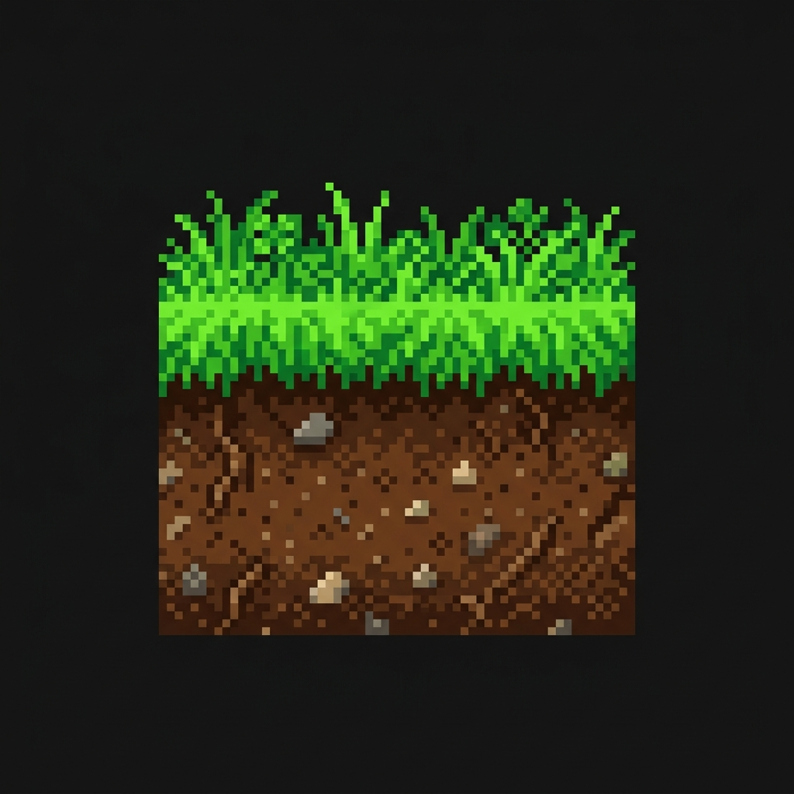
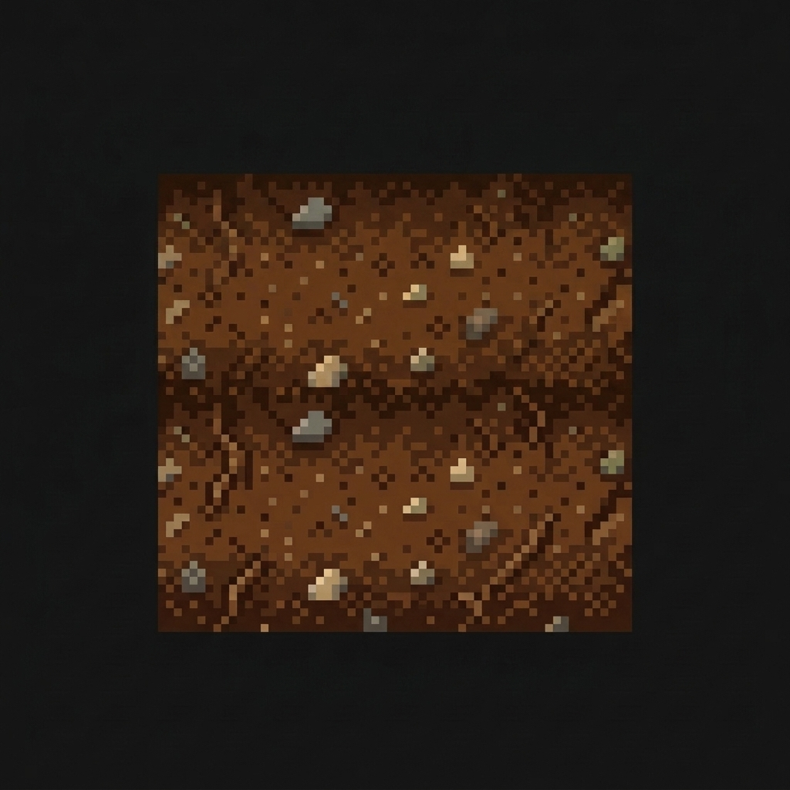
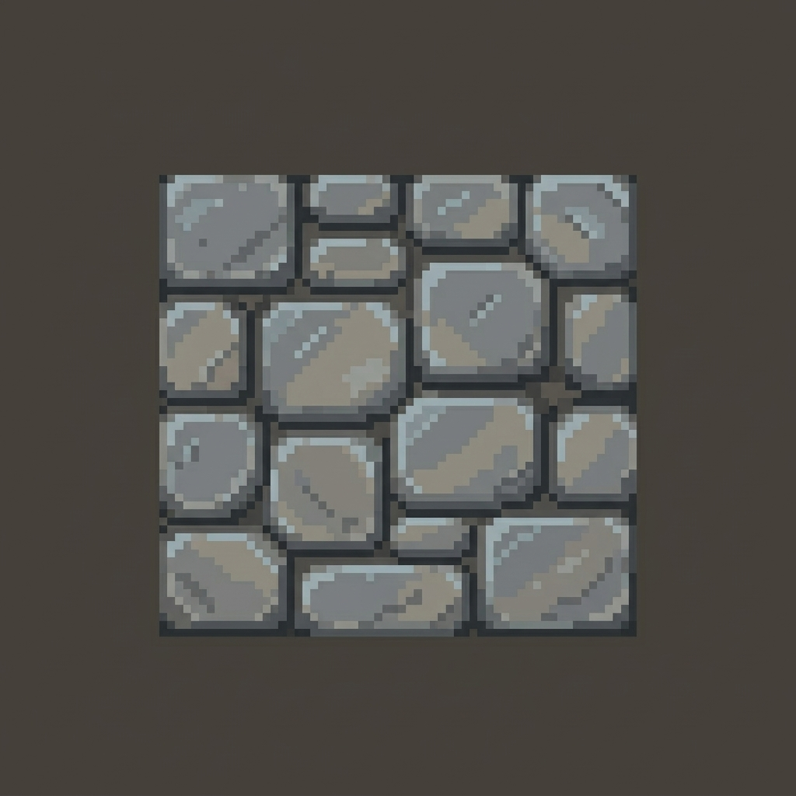

دليل معملي تطبيقي شامل خطوة بخطوة؛ لبناء البيئات ثنائية الأبعاد، تنظيم طبقات المشهد، إعداد قواعد اتصال الجوار التلقائي، تفعيل مصادمات الفيزياء، وبرمجة إطارات الحركة.
م. محمد علي
م. عبدالحميد هلال دعبان
بنهاية هذا التطبيق العملي، يُفترض أن يكون الطالب قادراً على تحقيق المخرجات التالية بكفاءة:
Tilemap Collider 2D و Composite Collider 2D.Art/Tiles/ للخرائط، Characters/ للشخصيات، و Animations/ لحفظ الكليبات.| المفهوم | الوظيفة في المحرك | التشبيه الواقعي |
|---|---|---|
| Grid | الكائن الأب الحاوي الذي يحدد مقاسات وأبعاد خلايا الشبكة. | دفتر المربعات الهندسي. |
| Tilemap | الطبقة التابعة لـ Grid التي نرسم عليها القطع ونضبط عليها التصادمات. | الورقة الشفافة التي نرسم عليها. |
| Tile | القطعة الرسومية الفردية المشتقة من Sprite والموضوعة داخل خلية. | الختم أو الرسمة داخل المربع الواحد. |
يتم تنظيم المشهد داخل نافذة Hierarchy في طبقات مستقلة:
Grid ├── Ground_Tilemap (الأرضيات الصلبة المصادمة) ├── Decoration_Tilemap (الأعشاب والصخور التجميلية) └── Background_Tilemap (السماء والجبال البعيدة)
| الخاصية | القيمة المعتمدة | السبب الهندسي |
|---|---|---|
| Texture Type | Sprite (2D and UI) |
لتحويل الخامة إلى كائن 2D مدعوم. |
| Sprite Mode | Multiple |
إذا كانت الصورة تضم عدة قطع تحتاج للتقطيع (Slice). |
| Pixels Per Unit | 16 أو 32 (موحدة) | توحيد مقياس الرسم لجميع القطع دون تشويه. |
| Filter Mode | Point (no filter) |
الحفاظ على حدة حواف البكسل في رسوم Pixel Art. |
| Compression | None |
منع تلطيخ ألوان البيكسل الدقيقة. |



بدلاً من وضع كل قطعة وزاوية يدوياً، تتيح Rule Tile فحص الجيران الثمانية وتطبيق الشروط:
NW (أعلى-يسار) · N (أعلى) · NE (أعلى-يمين)W (يسار) · [X: الخلية الحالية] · E (يمين)SW (أسفل-يسار) · S (أسفل) · SE (أسفل-يمين)
لتحويل الأرضيات من مجرد رسومات إلى سطح مادي صلب يقف عليه اللاعب:
Tilemap Collider 2D إلى كائن Ground_Tilemap.Composite Collider 2D لدمج الحواف المتجاورة وتجنب تعثر أقدام اللاعب.Rigidbody 2D على Static حتى لا تسقط الأرضية بالجاذبية!Used By Composite في مكوّن Tilemap Collider 2D.| المصطلح | المعنى والتأثير |
|---|---|
| Frame | صورة مفردة تمثل وضعية الشخصية في جزء من الثانية. |
| Animation Clip | الملف الحاوي لتسلسل الإطارات ومنحنى التوقيت. |
| Samples | عدد الإطارات في الثانية (FPS)؛ زيادتها تسرّع الحركة ونقصانها يبطئها. |
| Loop Time | خاصية تكرار تشغيل الحركة باستمرار دون توقف. |
| المعيار المطلوب تنفيذه في المشروع | الدرجة المستحقة |
|---|---|
| إنشاء كائن Grid وتنظيم الـ Tilemaps في طبقات (Ground, Decoration, Background) | 2 |
| استيراد الصور وضبط PPU وفلتر Point وتقطيع الـ Sprite Sheet بنجاح | 2 |
| استخدام Tile Palette وأدوات الرسم وتصميم منصات وأرضيات متناسقة | 3 |
| إنشاء Rule Tile وبرمجة قواعد الجوار للحواف والزوايا بنجاح | 4 |
| تفعيل Tilemap Collider و Composite واختبار استقرار اللاعب عليه | 2 |
| إنشاء Animation Clip لشخصية أو عنصر وتفعيل التكرار وضبط السرعة | 4 |
تنظيم المشروع وحفظ المشهد باسم Tilemap_Animation_Task |
1 |
| المجموع الكلي | 18 درجة |
| العَرَض أو المشكلة | السبب الشائع | الإجراء التصحيحي الفوري |
|---|---|---|
| الصور غير قابلة للتقطيع | Sprite Mode مضبوط على Single | حوّله إلى Multiple ثم افتح Sprite Editor واضغط Slice. |
| القطع باهتة وضبابية | فلتر التنعيم مفعّل | غيّر Filter Mode إلى Point (no filter) و Compression إلى None. |
| سقوط اللاعب عبر الأرض | غياب المصادم أو حركة الأرض | أضف Tilemap Collider 2D واجعل Rigidbody 2D على Static. |
| الأنيميشن يتوقف بعد لفة واحدة | Loop Time غير مفعّل | حدّد ملف الـ Clip في Project وفعّل خيار Loop Time. |